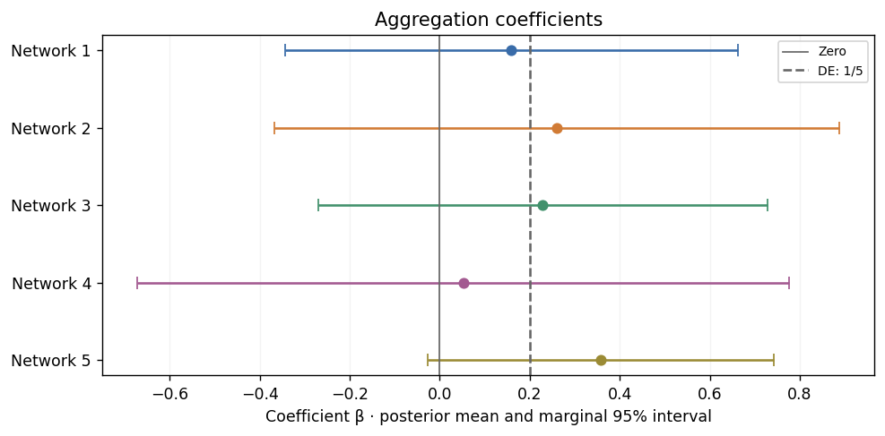
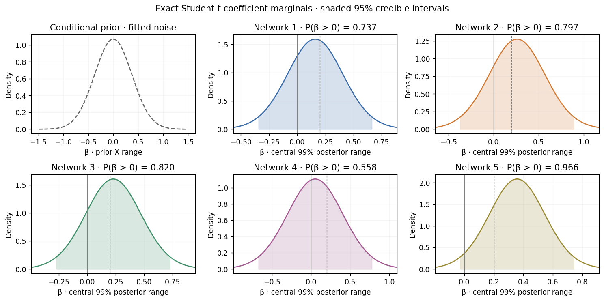
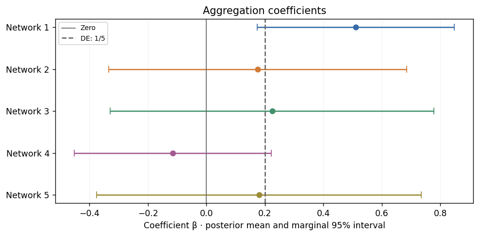
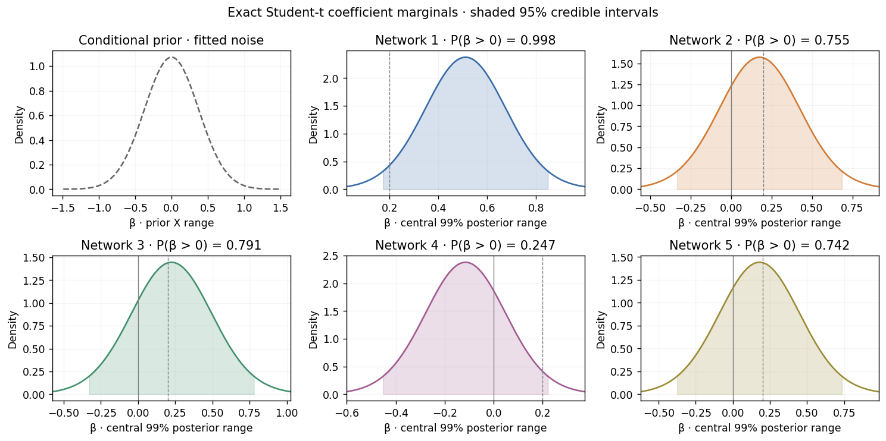
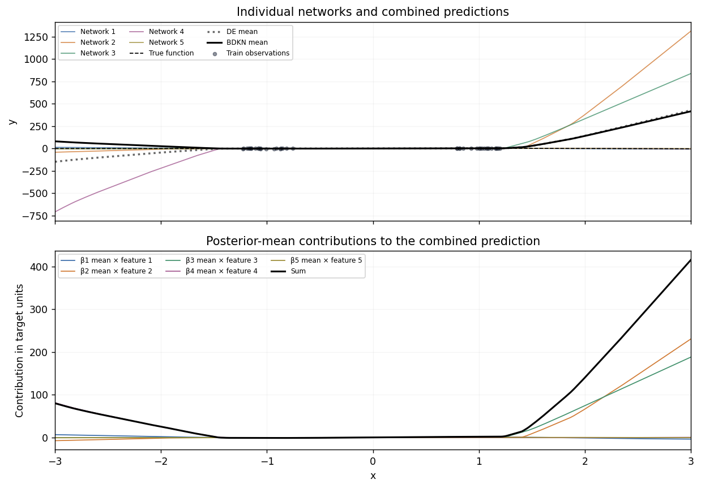
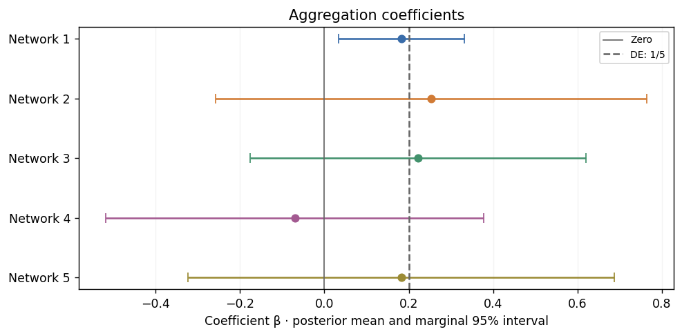
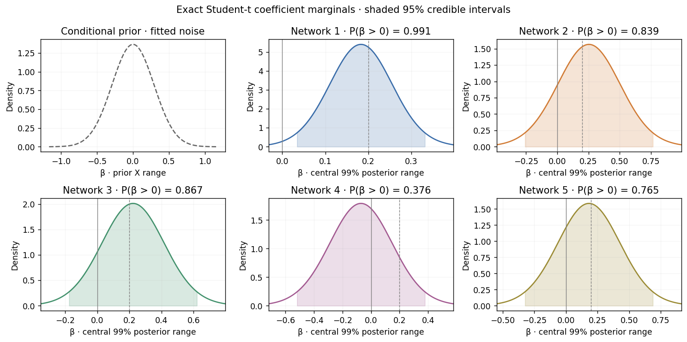
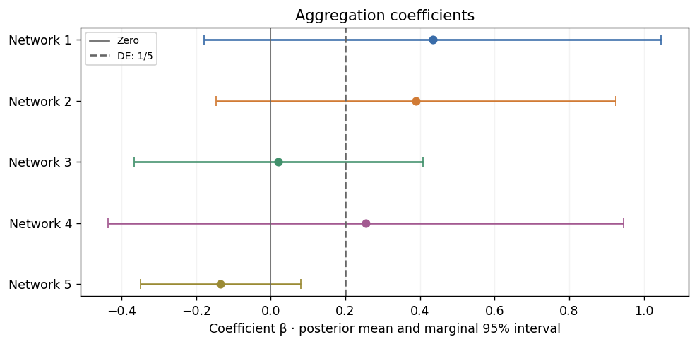
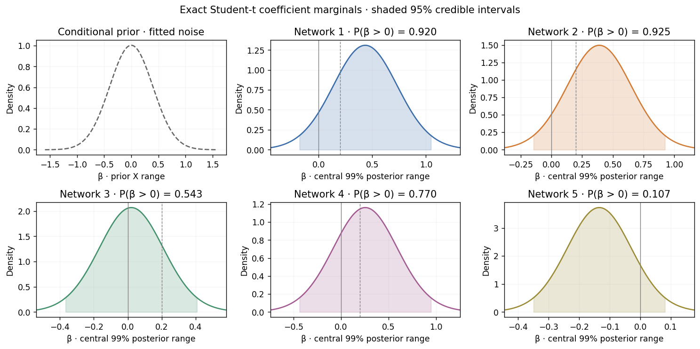
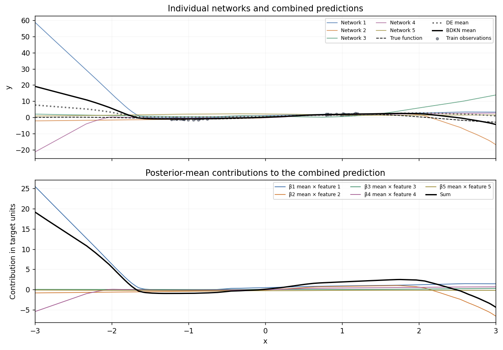

Regression comparison
Download resultsAggregation weights
Coefficients can be negative and need not sum to one. Intervals describe coefficient uncertainty; the dashed reference is DE’s fixed 1/H weight.
BDKN



Each density panel uses its own X range for readability; coefficient intervals above share a common axis. Prior reference conditions on fitted noise. Contribution shares use held-out inputs; test targets are used only for scoring.
| Network | β mean | 95% low | 95% high | P(β > 0) | Contribution share | Test RMSE | Test NLL |
|---|---|---|---|---|---|---|---|
| 1 | 0.15914 | -0.34378 | 0.66206 | 0.73694 | 0.10339 | 1.22604 | 3.28984 |
| 2 | 0.26043 | -0.36725 | 0.88811 | 0.79665 | 0.27520 | 1.50533 | 12.03988 |
| 3 | 0.22915 | -0.27019 | 0.72850 | 0.82038 | 0.21502 | 1.32037 | 9.46759 |
| 4 | 0.05241 | -0.67124 | 0.77606 | 0.55782 | 0.00895 | 1.10368 | 1.55372 |
| 5 | 0.35756 | -0.02672 | 0.74184 | 0.96634 | 0.39743 | 1.54360 | 13.74209 |
Functional repulsion · BDKN



Each density panel uses its own X range for readability; coefficient intervals above share a common axis. Prior reference conditions on fitted noise. Contribution shares use held-out inputs; test targets are used only for scoring.
| Network | β mean | 95% low | 95% high | P(β > 0) | Contribution share | Test RMSE | Test NLL |
|---|---|---|---|---|---|---|---|
| 1 | 0.51101 | 0.17390 | 0.84813 | 0.99805 | 0.02215 | 3.89959 | 2.44247 |
| 2 | 0.17586 | -0.33360 | 0.68532 | 0.75529 | 0.43588 | 372.30414 | 254.69458 |
| 3 | 0.22475 | -0.32912 | 0.77862 | 0.79149 | 0.40838 | 260.55989 | 269.43747 |
| 4 | -0.11507 | -0.45159 | 0.22145 | 0.24676 | 0.13033 | 186.49972 | 75.57401 |
| 5 | 0.17982 | -0.37561 | 0.73524 | 0.74167 | 0.00325 | 1.33926 | 42.35256 |
Weight repulsion · BDKN



Each density panel uses its own X range for readability; coefficient intervals above share a common axis. Prior reference conditions on fitted noise. Contribution shares use held-out inputs; test targets are used only for scoring.
| Network | β mean | 95% low | 95% high | P(β > 0) | Contribution share | Test RMSE | Test NLL |
|---|---|---|---|---|---|---|---|
| 1 | 0.18287 | 0.03442 | 0.33132 | 0.99148 | 0.09252 | 16.76517 | 3.22990 |
| 2 | 0.25364 | -0.25766 | 0.76494 | 0.83896 | 0.20525 | 26.41460 | 96152.12218 |
| 3 | 0.22239 | -0.17542 | 0.62020 | 0.86737 | 0.48024 | 52.16484 | 15.78510 |
| 4 | -0.07029 | -0.51787 | 0.37728 | 0.37629 | 0.00970 | 3.25962 | 2.02367 |
| 5 | 0.18207 | -0.32314 | 0.68727 | 0.76468 | 0.21229 | 33.38614 | 21934957.13252 |
First-order repulsion · BDKN



Each density panel uses its own X range for readability; coefficient intervals above share a common axis. Prior reference conditions on fitted noise. Contribution shares use held-out inputs; test targets are used only for scoring.
| Network | β mean | 95% low | 95% high | P(β > 0) | Contribution share | Test RMSE | Test NLL |
|---|---|---|---|---|---|---|---|
| 1 | 0.43432 | -0.17781 | 1.04646 | 0.92033 | 0.63950 | 15.39668 | 31.72389 |
| 2 | 0.38926 | -0.14585 | 0.92437 | 0.92534 | 0.18145 | 2.76172 | 18.66741 |
| 3 | 0.02088 | -0.36651 | 0.40827 | 0.54310 | 0.01156 | 5.04355 | 2.58434 |
| 4 | 0.25495 | -0.43511 | 0.94501 | 0.77020 | 0.12447 | 4.73499 | 94213.91945 |
| 5 | -0.13446 | -0.34944 | 0.08052 | 0.10675 | 0.04302 | 2.09471 | 26.33559 |